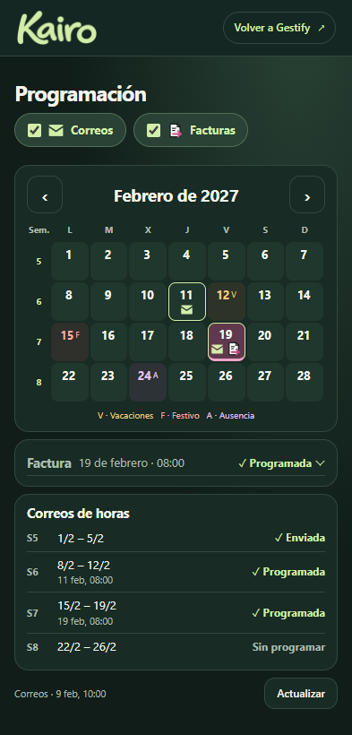
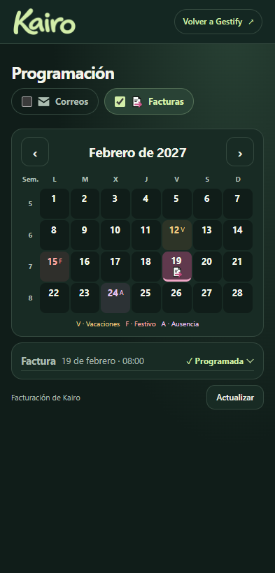
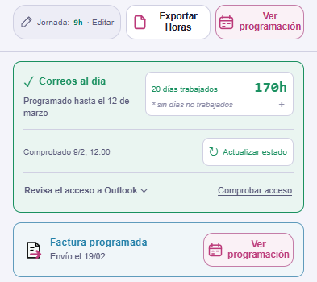
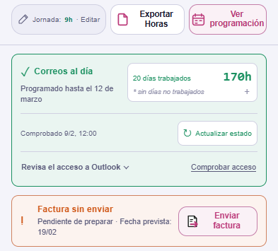
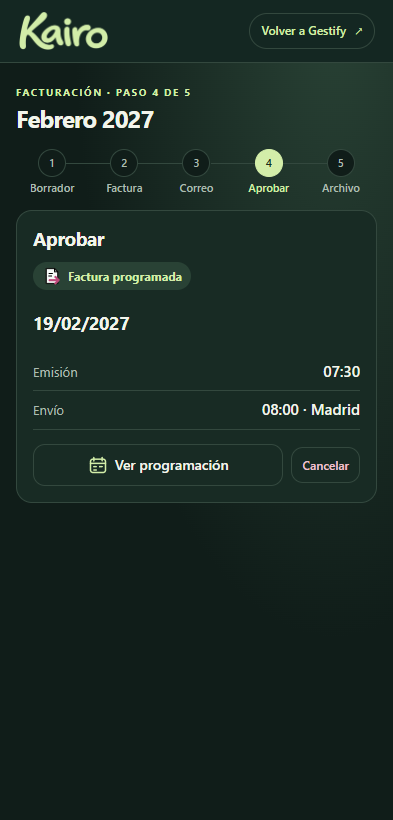
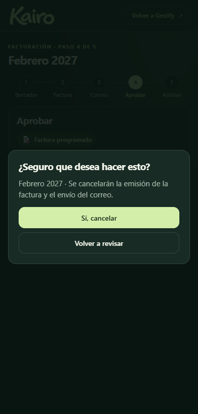

El calendario de envíos
Ejemplo de febrero de 2027. El día 19 coinciden un correo de horas y una factura. Pulsa las capturas para ampliarlas.
Programación




Home




Gestión de la factura



